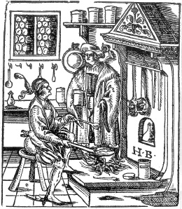

ŞEKİL 52. Resimde, bir merhemin hazırlanması konu edilmektedir. Eczacının denetimi altında kalfa, ince toz haline dövülmüş eczaları ve sıvı domuz yağını üç ayaklı bir çukur tava içinde ateş üzerinde karıştırmaktadır. Ocağın üzerinde başkaca tava ve kepçeler, duvarda pencerenin altında kan alma (hacamat) çanakçıkları, ayrıca çömlekler görülmektedir. Ocağın önündeki çömleğin üzerinde etiket yer almaktadır (Genç Hans Burgkmair’ın çizimi).147